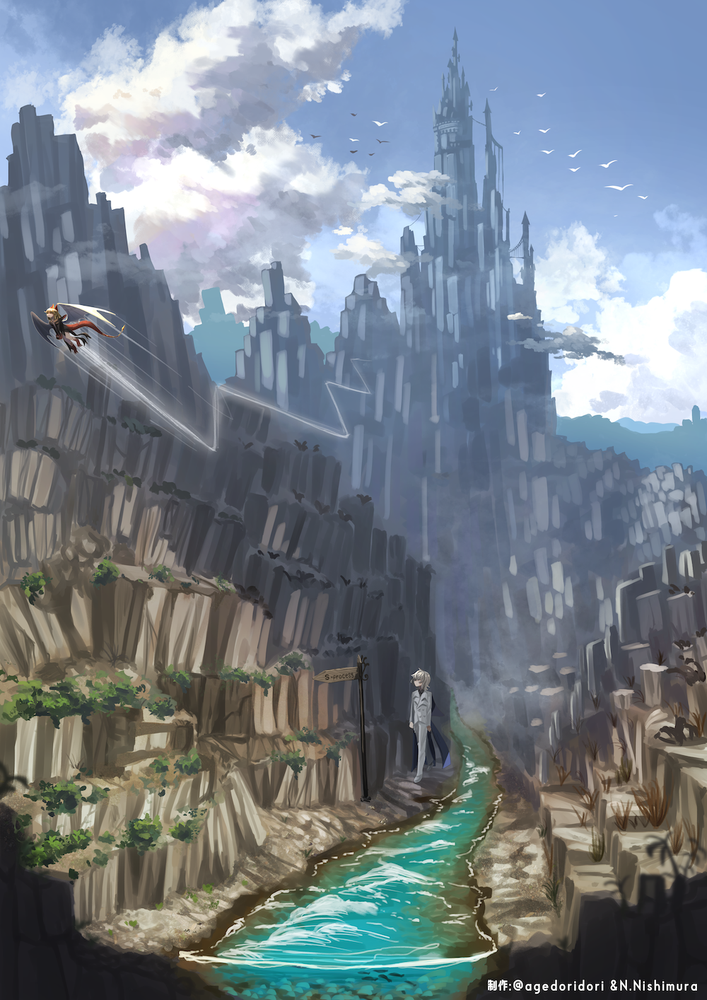
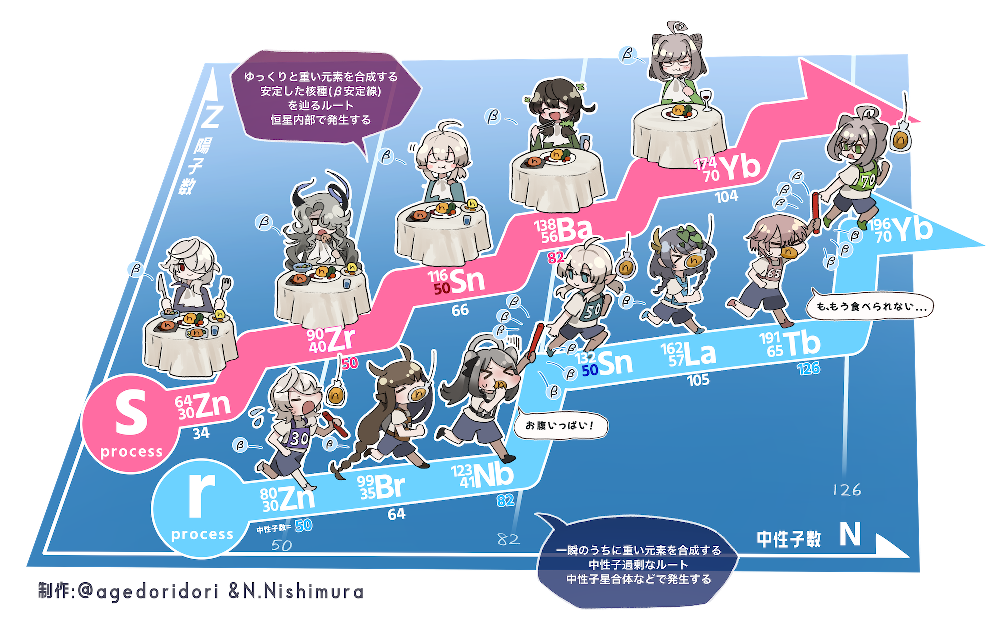

元素楽章 × 元素合成 (GENSOGAKUSHO × GENSOGOSEI)
| 元素たちの擬人化プロジェクト元素楽章（©揚げ鶏々）と元素合成研究との共同制作プロジェクトです。宇宙の元素合成を元素の「擬人化」キャラクターたちで説明するイラストを作成しました。 | |
|
| このサイトで公開、あるいは製作者たちによって配布されるイラストは、研究発表、教育活動やアウトリーチ目的など非営利活動であれば、ご自由にお使いいただいて構いません。また、適切な形での引用であれば、公開して構いません。ただし、オリジナルの画像の再配布や著作表示を改変しての公開は禁止します。 |
（β崩壊）安定の谷とsプロセスとsプロセス |
核図表上でのsプロセスとrプロセスの進行（上）と終端（下） |
|  |  |
 |
|
sプロセスとrプロセスの解説 |
|
 |
核分裂について（非対称分裂と対称分裂） |
 |
|